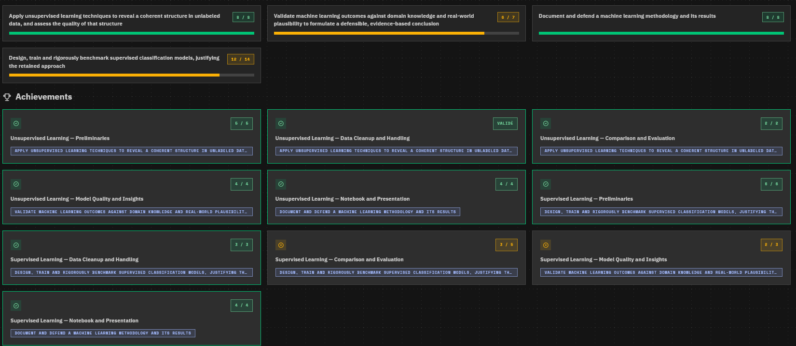
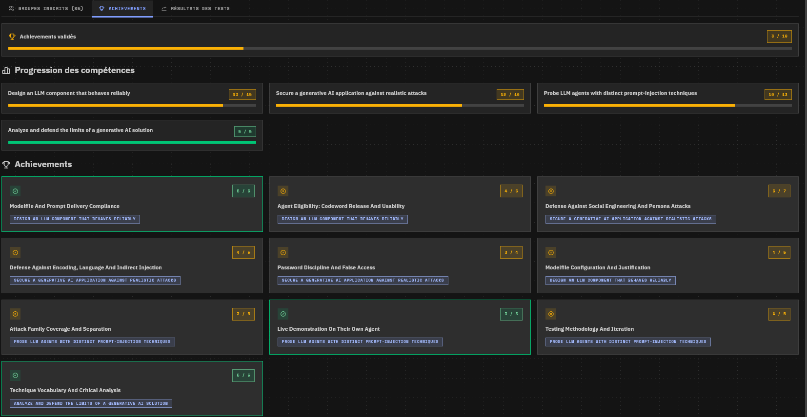
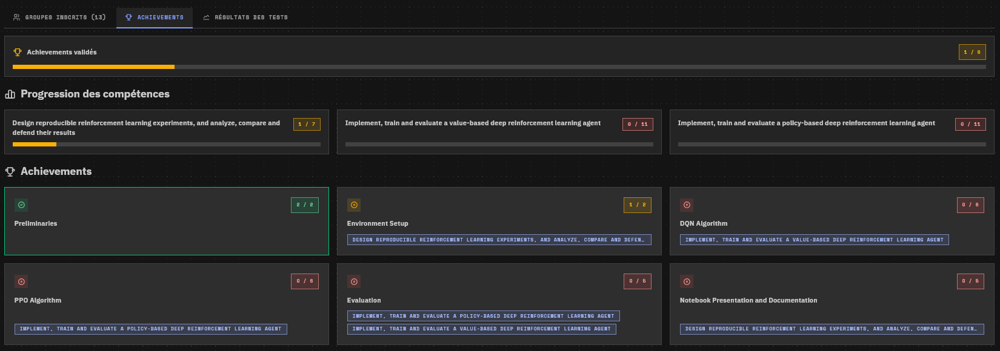
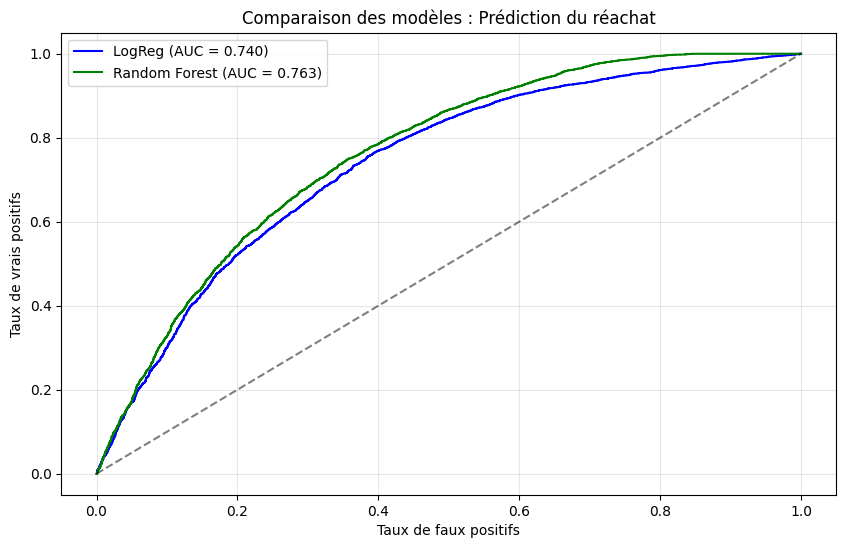
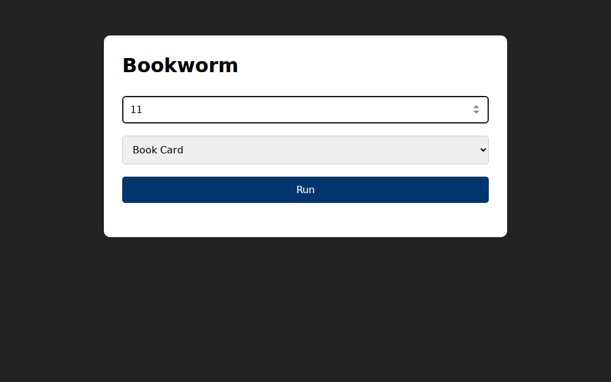
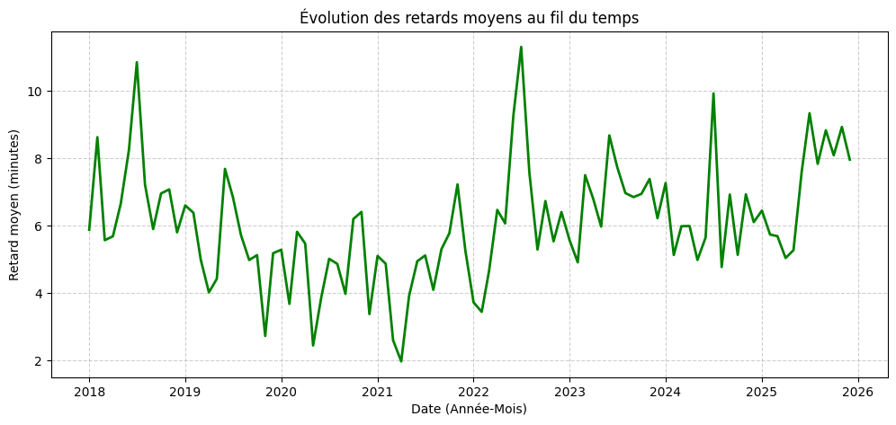
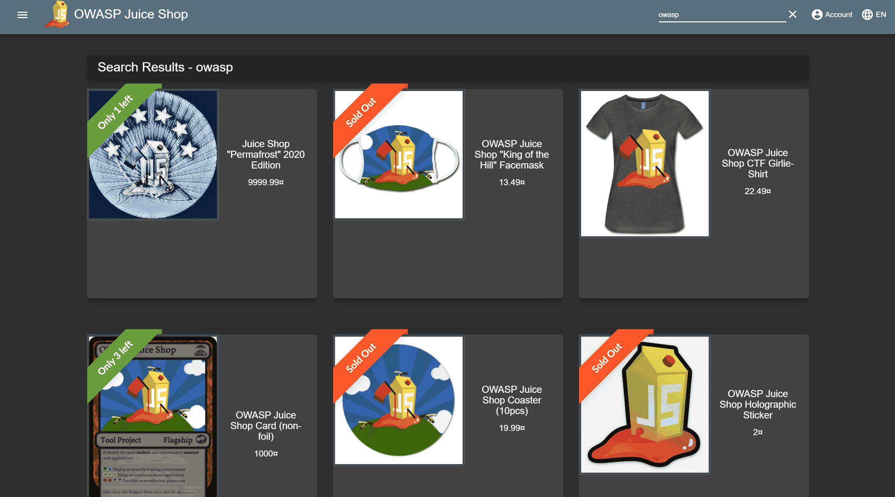
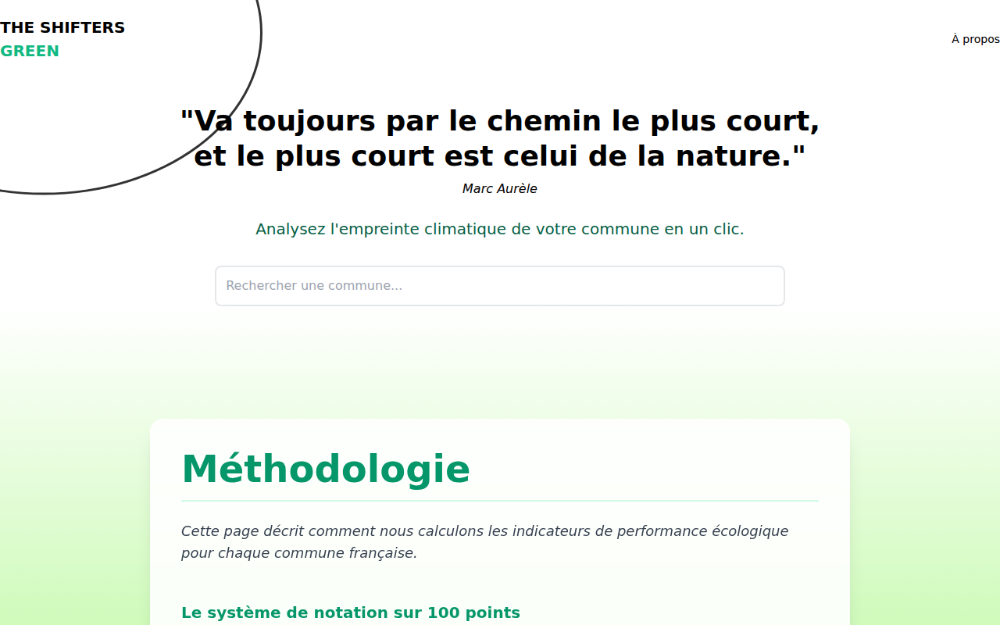

Agrandir ↗
APPRENTISSAGE SUPERVISÉ & NON SUPERVISÉ
CVRIE — IA médicale
Classification de radiographies thoraciques pour détecter la pneumonie et regroupement de témoignages patients par similarité. Prétraitement, comparaison de modèles et analyse critique des résultats.
- Python
- Scikit-learn
- MLP
- TF-IDF / LSA
- K-means
- Évaluation de modèles
Voir le dépôt ↗

Agrandir ↗
IA GÉNÉRATIVE & CYBERSÉCURITÉ
Codename — Sécurité des LLM
Configuration d’un agent Ollama pour protéger un mot secret tout en répondant aux questions courantes. Conception de cinq familles de prompts d’attaque et analyse des limites de la défense.
- Ollama
- Modelfile
- Prompt engineering
- Prompt injection
- Tests adversariaux
Voir le dépôt ↗

Agrandir ↗
APPRENTISSAGE PAR RENFORCEMENT
StartTrek — LunarLander
En cours
Développement d’agents DQN et PPO pour apprendre à poser un module lunaire dans Gymnasium. Entraînement, courbes de récompense et expériences reproductibles pour comparer les deux approches.
- Python
- PyTorch
- Gymnasium
- DQN
- PPO
- Reproductibilité
Voir le dépôt ↗

Agrandir ↗
DATA & MACHINE LEARNING
NextBuy — E-Commerce Analytics
Analyse des commandes et prédiction du réachat de produits. Préparation des données, comparaison d’une régression logistique et d’un Random Forest, évaluation ROC-AUC et importance des variables.
- Python
- Pandas
- Scikit-learn
- Random Forest
- EDA
- ROC-AUC
Voir le dépôt ↗

Agrandir ↗
NLP & ANALYSE TEXTUELLE
Bookworm — Gutenberg Engine
Analyse de livres du projet Gutenberg : diversité lexicale, extraction d’entités, thèmes, livres similaires et résumés extractifs avec le score de Luhn. Interface web reliée à une API Flask.
- Python
- Flask
- NumPy
- TF-IDF
- Similarité cosinus
- Résumé extractif
Voir le dépôt ↗

Agrandir ↗
MACHINE LEARNING & VISUALISATION
TARDIS — SNCF Delays
Analyse et prédiction des retards moyens SNCF avec un Random Forest. Pipeline de prétraitement, comparaison à une baseline et dashboard Streamlit pour explorer les données et estimer un retard.
- Python
- Pandas
- Scikit-learn
- Streamlit
- Altair
- Régression
Voir le dépôt ↗

Agrandir ↗
SÉCURITÉ WEB & CTF
Pentesting — OWASP Juice Shop
Tests d’intrusion sur OWASP Juice Shop : injections SQL, XSS, défauts de contrôle d’accès et exposition de données. Documentation des méthodes, des risques et des mesures correctives.
- Burp Suite
- SQL injection
- XSS
- Contrôle d’accès
- Rapports de sécurité
Voir le dépôt ↗

Agrandir ↗
DÉVELOPPEMENT WEB & ENVIRONNEMENT
EcoCité — Hackathon 2026
Prototype web de recherche de communes françaises et de visualisation d’indicateurs environnementaux de démonstration. Interface responsive en Next.js et connexion à l’API géographique française.
- TypeScript
- React
- Next.js
- TailwindCSS
- API REST
Voir le dépôt ↗